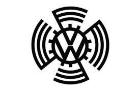
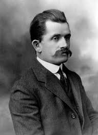
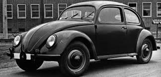
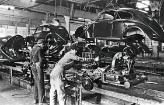

Historia de Volkswagen
Volkswagen, cuyo nombre significa “el automóvil del pueblo” en alemán, fue fundada en 1937 en Alemania por orden del gobierno de ese país. Su objetivo era fabricar un vehículo confiable, económico y accesible para todos los ciudadanos.
El ingeniero Ferdinand Porsche fue el encargado de diseñar el primer modelo, que más tarde se convertiría en el Volkswagen Escarabajo (Beetle), uno de los autos más famosos y vendidos de la historia.
A lo largo de los años Volkswagen expandió su línea con modelos icónicos como la Kombi, el Golf y el Passat, manteniéndose como una de las marcas más influyentes del mundo.
Tras la Segunda Guerra Mundial, la fábrica de Volkswagen fue reconstruida y el Escarabajo se transformó en un símbolo del renacer alemán. Durante las décadas de 1950 y 1960, el pequeño auto conquistó mercados de todo el mundo gracias a su diseño simple, bajo consumo y gran durabilidad. Con el tiempo, Volkswagen amplió su línea de vehículos y adquirió marcas importantes como Audi, SEAT, Škoda, Lamborghini, Bentley, Bugatti y Porsche, formando uno de los grupos automotrices más grandes del planeta.
En el siglo XXI, Volkswagen se ha enfocado en la innovación tecnológica y la movilidad sustentable, lanzando su línea de vehículos eléctricos ID., que marcan el futuro de la marca. Hoy, Volkswagen sigue siendo sinónimo de calidad, ingeniería alemana y evolución constante, manteniendo su objetivo original: crear autos confiables para la gente común